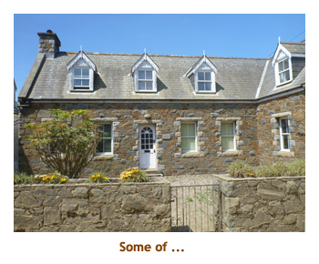
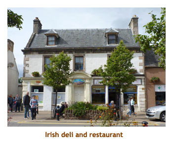

[ Home ] [ Travel ] [ Photography ] [ Pets ] [ Games] [ Rowing] [ Physics ]


Cruising on the Caribbean Princess
Travel
Cruises
Past Cruises (Diaries)
Future Cruises
Rogues Galleries
Land Trips
Diaries (Land Trips)
Hawai'i - Big Island - 04'01
Hawai'i - Maui - 05'02
Hawai'i - Big Island - 04'03
Hawai'i - Kaua'i - 09'04
Hawai'i - Big Island - 04'06
Hawai'i - Maui - 04'06
Mainland China - 05'07
Phoenix, Arizona - 12'07
Greek Isles - 05'08
Hawai'i - Kaua'i - 09'08
Hawai'i - Big Island - 09'09
Hawai'i - Maui - 05'12
Hawai'i - Big Island - 04'13
Ireland - 08'13
Mexico - Cancun 11'13
France/Belgium/Lux 07'15
Hawai'i - Big Island - 05'17
England / Wales - 06'17
Hawai'i - Big Island - 09'19
Photography
Cameras
Underwater
Pets
Tara
Blackie
Whitey
Muffy
Ollie
Rusty
Fluffy
Rufus&Dufus
Games
Rowing
Physics
Rating (out of 5):
Ship  Food
Food  Service
Itinerary
Service
Itinerary
This cruise diary continues from the England / Wales land tour that immediately preceded it. We had done this same cruise (with one exception) several years ago - the only difference being the swapping of Kirkwall for Liverpool. We had been twice to the Shetland Islands, but never to the Orkneys, so Marjorie specially picked this cruise for the new port. To save a bit of money we booked an oceanview cabin figuring that the British Isles climate would prevent us from getting much use from a balcony. As much as I love my balcony, it was the right decision as most of the cruise was cold and windy on the ocean.
The ship was very full. Almost all of the cabins were booked. Out of 3,100 passengers about 2,000 of them were from the US, 400 from Britain and 200 from Canada. The rest were from a multitude of countries. The ship had just come out of drydock and some of the public areas had been renovated or changed. The service staff and room stewards were excellent and always willing to please. The food was very good in the dining room and international cafe, but I was a bit disappointed with the buffet fare. I guess I'm spoiled by the Oceania buffet where meat is cooked to order right in front of you.
Formal night is dying on Princess (yeah) just as it has on Celebrity (yeah!). The only difference is that Celebrity has re-written their dress code policy while Princess has just stopped enforcing it. Marjorie and I dressed as normal on "formal night" as did 50% of the other diners with no implications. Princess should re-write / clarify what they are willing to enforce or abandon formal nights altogether (yeah!).
We do enjoy playing trivia on a cruise and met a wonderful couple
(Jim & Vickie) who joined us for the duration of the cruise. They were very sharp
at trivia leaving Marjorie and I to fill in the odd gap. Our other two team mates (6
on a team) varied from session to session from a pool of 4 or 5 sporadic
players. We were quite successful, often winning or tieing for the win.
Best of all, we had a lot of laughs.
Pre-cruise (Jun 17) - London to Southampton
Day 1 (Jun 18) - Boarding in Southampton
Day 2 (Jun 19) - A day in Sark
There were only enough buggies for half of our crowd, so we were split into two groups - one doing the carriage ride first, then the garden / village tour; the other doing the carrige ride second. Our driver took us around quite a bit of the island (for about an hour) then dropped us off at the "La Seigneurie Gardens" for an hour or so. The gardens were beautiful including a soft fruit area, an orchard, a vegetable garden, a small hedge maze and, of course, a flower garden. We wandered the grounds for quite a while and then broke out the cookies and Coke (from the ship). The carriages returned to take us the short distance back to the town center. There we were given another hour to explore the village. We discovered a general store and had ice cream cones to beat the heat. It was about noon that the tractor appeared to take us back to the ferry dock. We had a one hour voyage back to St. P. Now, our stay in Guernsey was a short one and our ship was supposed to sail at 2:30. Therefore, all of the Guernsey tours were morning tours. By fluke, all of the Guernsey tours seemed to have arrived back at the tender port at the same time. There was a huge lineup of people waiting for the tenders. We were in the line for almost an hour (in the hot sun) until we finally made it to a tender. Not nice! Regardless, we had certainly enjoyed our brief visit to Sark. We were back on the ship by 2:30, and the ship had to delay leaving until 3:00. We had a late lunch in the International cafe, and then made it to afternoon trivia where we tied for the win. For dinner I had broiled shrimp with vegetable rice. Excellent. Once again we didn't make it to the entertainment but instead wandered and then went to bed.
|  | |||
Day 3 (Jun 20) - Revisiting Cobh
Day 4 (Jun 21) - Surrounds of Dublin
Day 5 (Jun 22) - Back to Belfast

 Today would be our third time in Belfast. In the past we had met up with our friend, Bill (from Larne)
but this time we were on our own. We hadn't booked any excursion and decided to just wander
around the city. It was a cool day (high of 19), so it was long pants and a sweatshirt for me. We were
up at 7:30 and had breakfast in the MDR. Afterwards we hopped on the city shuttle bus to take us from
the container port to the city center (about 15 minutes). The shuttle was free as, like so many ports, we
were not allowed to walk through the busy container areas so the bus was provided.
We wandered around the downtown core visiting
St. Ann's Cathedral, M&S, Lidl (groceries) and Dunnes (dept store). Marjorie bought some souvenirs
(tea towels and mug) while I got some Irish beer. We shuttled back to the ship in time for lunch (12:30).
After lunch Marjorie did laundry while I went to the gym. (Marjorie cleaning the clothes, me making them dirty!).
For dinner I had lamb shank. Then wandering and bed.
Today would be our third time in Belfast. In the past we had met up with our friend, Bill (from Larne)
but this time we were on our own. We hadn't booked any excursion and decided to just wander
around the city. It was a cool day (high of 19), so it was long pants and a sweatshirt for me. We were
up at 7:30 and had breakfast in the MDR. Afterwards we hopped on the city shuttle bus to take us from
the container port to the city center (about 15 minutes). The shuttle was free as, like so many ports, we
were not allowed to walk through the busy container areas so the bus was provided.
We wandered around the downtown core visiting
St. Ann's Cathedral, M&S, Lidl (groceries) and Dunnes (dept store). Marjorie bought some souvenirs
(tea towels and mug) while I got some Irish beer. We shuttled back to the ship in time for lunch (12:30).
After lunch Marjorie did laundry while I went to the gym. (Marjorie cleaning the clothes, me making them dirty!).
For dinner I had lamb shank. Then wandering and bed.
Day 6 (Jun 23) - Greenock and Robbie Burns
It was about 12:15, so we walked across the street to the "Poet's Corner" for lunch. We had a very nice lunch and then walked to the Burns garden at the Brig o'Doon House. From there we wandered to the Brig o'Doon (yes, it's a real bridge) and walked over it. The road had been relocated by half a kilometer, so the Brig did not lead to anything other than a green copse and hill. While we were standing on the bridge the sun popped out! That was nice. By now it was 2:30 so R&R drove us back to the ship (arriving about 3:30). Thank you R&R for a very interesting and educational day! After saying our goodbyes, I headed onto the ship while Marjorie walked to a nearby grocery store for some shopping. She was back aboard on time for a 4:30 folkloric show in the theatre. It was very good - pipers, highland dancers and a singer. For dinner I had seafood skewers. While we were eating, the captain announced that due to some very heavy weather in the Orkneys, we would be scratching our port stop at Kirkwall and adding an extra sea day. We would be arriving at Invergordon in the afternoon of the second day. Aaargh! Kirkwall was the one new port for us and why we had booked this sailing. Too bad! To bed.
Days 7,8 (Jun 24,25) - Two days at sea, then Invergordon
On the second afternoon we docked at Invergordon. We were a day early,
so there were no excursions. Invergordon is a small, "one street" town. You
can't get lost because you either walk down the street or up the street. So
3,000 of us passengers infiltrated the town of 4,000 people, flooding the
street with curious onlookers. The weather had warmed up, it was dry,
and the sun even popped out for a while. The shops and houses were very quaint. A
number of the buildings had huge painted murals. We did enjoy our walk
in town, but eventually headed back on board for trivia then dinner. For dinner
I had prime rib. Evening trivia was "Animal Planet" and our team mates J&V
were a fountain of knowledge re everything about the TV series. We (ahem!)
won with a 100% score. Bed time.
|  |
Day 9 (Jun 26) - Invergordon and Dunrobin Castle
Note: I thought we would ace the space trivia. After all, I took
up space at university. But when the first question asked the weight (sic!)
of the Hubble telescope in elephants, I knew I was doomed. Besides, everyone
knows that the Hubble scope is currently weightless (zero elephants). I
didn't have the nerve to explain to the moderator the difference between
weight and mass.
Day 10 (June 27) - Anchored at South Queensferry (Edinburgh)
 |
|||
 |
After spending about an hour in the Bannockburn museum, we reboarded the bus and drove further north to Stirling Castle. We were given a brief historical lecture about the castle and then were allowed 2 hours to roam the castle and grounds. The castle is actually many buildings, built over the years. Some of the buildings house interesting museums now. Others have been restored with furnishings from the various eras. The grand hall was beautifully restored with colorful coats of arms on the ceiling and decorative flags. The indoor displays were extra welcome as it was drizzling with rain outside. After exhausting our time allotment, we boarded the bus for our return drive to the ship.
Note: As we approached South Queensferry the guide pointed out a shipyard (across the forth) where two aircraft carriers were under construction for the British navy. One of them was supposed to start sea trials today. Sure enough, later in the evening, we saw one of the carriers with a tug escort heading across the forth.
We arrived at the ship about 6:30. Because of the late tours, the MDR was
open seating. For dinner I had diver scallops. We missed
trivia due to our late dinner. As we went to bed we turned the clocks one hour
forward, ready for a day in France.
Day 11 (Jun 28) - A cold rainy day at sea
Day 12 (Jun 29) - Le Havre and Rouen
 At this point it was about 3:30 and we were set loose for a 2 hour on-your-own time
wander through the shopping district.
We explored along the main street and ended up at the Notre Dame Cathedral.
The cathedral was open so we did a walk through the huge building. The stained
glass windows were amazing. When we finally exited the church, the sun popped out
and a small brass band was assembling in the facing square. We popped into a nearby
info center so that Marjorie could use the internet. Then we wandered back to our starting
point arriving maybe 20 minutes early, which we spent browsing in an adjacent farmer's
market. There were lots of flowers, veggies, meats and sea food. We piled on the bus
just as it started to pour in rain. By good fortune we hadn't faced a single drop of rain while
we were out and about. We were back to the ship by 7:00. The restaurant
was open seating again due to the late excursions. For dinner I had lamb shank. We
returned to our cabin to
finish packing our suitcases. We put our suitcases out in the hallway and hustled to
the Explorer's Lounge for a final trivia. We said our goodbyes to our trivia mates and
headed off to bed. We put the clocks an hour back tonight.
At this point it was about 3:30 and we were set loose for a 2 hour on-your-own time
wander through the shopping district.
We explored along the main street and ended up at the Notre Dame Cathedral.
The cathedral was open so we did a walk through the huge building. The stained
glass windows were amazing. When we finally exited the church, the sun popped out
and a small brass band was assembling in the facing square. We popped into a nearby
info center so that Marjorie could use the internet. Then we wandered back to our starting
point arriving maybe 20 minutes early, which we spent browsing in an adjacent farmer's
market. There were lots of flowers, veggies, meats and sea food. We piled on the bus
just as it started to pour in rain. By good fortune we hadn't faced a single drop of rain while
we were out and about. We were back to the ship by 7:00. The restaurant
was open seating again due to the late excursions. For dinner I had lamb shank. We
returned to our cabin to
finish packing our suitcases. We put our suitcases out in the hallway and hustled to
the Explorer's Lounge for a final trivia. We said our goodbyes to our trivia mates and
headed off to bed. We put the clocks an hour back tonight.
Day 13 (Jun 30) - Southampton and home
 We were up early on our final day. We were docked at the Mayflower docks in
Southampton. We breakfasted in the buffet then hustled to meet our 8:15 check-out time.
We left the ship and located our bags in the terminal building. From there we
went out to the bus that would take us to Heathrow. It was about a 2.5 hour drive
and we were dropped off at Terminal 2. We went through security and had time
to snack on some cookies and peanuts in the general seating area. Our flight
was direct to Calgary, leaving at 1:00. The incoming flight was late, so we were
about 1 hour late leaving LHR. We arrived in Calgary about 4:00. Customs was
pretty quick as it is fairly automated now. Christina was waiting for us at the baggage
area. She transported us back to her house where we transferred to our own car
and drove home. We were home by 6:00 PM. The kitties were delighted to see us.
The house was fine. Another great cruise!
We were up early on our final day. We were docked at the Mayflower docks in
Southampton. We breakfasted in the buffet then hustled to meet our 8:15 check-out time.
We left the ship and located our bags in the terminal building. From there we
went out to the bus that would take us to Heathrow. It was about a 2.5 hour drive
and we were dropped off at Terminal 2. We went through security and had time
to snack on some cookies and peanuts in the general seating area. Our flight
was direct to Calgary, leaving at 1:00. The incoming flight was late, so we were
about 1 hour late leaving LHR. We arrived in Calgary about 4:00. Customs was
pretty quick as it is fairly automated now. Christina was waiting for us at the baggage
area. She transported us back to her house where we transferred to our own car
and drove home. We were home by 6:00 PM. The kitties were delighted to see us.
The house was fine. Another great cruise!